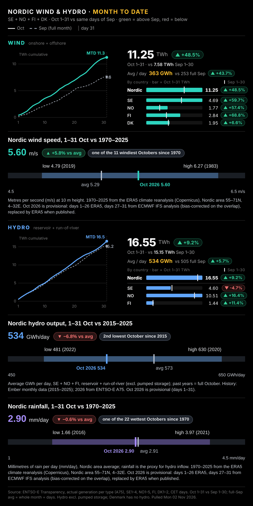

MARKET PULSE Oil eases on Doha talks; a central-bank week ahead Mon 2 Nov 2026 · new since the Sunday look-ahead (Sun 20:22) · Fri 30 Oct close already covered · Zurich time |
| IN THIS BRIEF 1 Asia & overnight · 2 Nordic power · 3 Top 5 reads · 4 News · 5 Calendar |
• Oil is giving back part of last week's run. Qatar-mediated talks with Iran went into a third day and the weekend passed without escalation, so traders trimmed the war premium. • The shipping risk hasn't gone: a Qatari LNG carrier was struck by unidentified objects in the Gulf overnight, and the no-strike pledge only runs to Tuesday's US midterms. • Asia is mixed rather than in retreat. Korea leads, China is firm, Japan and Hong Kong edge up, and US futures claw back some of Friday's tech losses. • Central banks fill the week. The Bank of England is set to hike on Thursday but may lean against bets for more, with the Riksbank and Norges Bank either side and US payrolls on Friday. |
1 · Asia & overnight Oil trims its war premium while talks run |
| Kospi | 5,900 | +4.1% | Mon 05:27 | | Shanghai Comp. | 3,641 | +1.2% | Mon 04:30 |
| Nasdaq 100 futures | 28,798 | +0.9% | Mon 05:37 | | Brent Jan-27 | 110.01 | −3.0% | Mon 05:37 | | WTI Dec-26 | 100.82 | −3.2% | Mon 05:37 |
Material moves only (Asia ≥1%, equity futures ≥0.7%, oil ≥1.5%, FX ≥0.3–0.5%), markets that traded after the last brief. Little changed: Nikkei 225 +0.8% · Hang Seng +0.6% · ASX 200 −0.6% · Taiex −0.2% · S&P 500 fut. +0.5% · Gold +0.3% · EUR/USD +0.1% · USD/JPY +0.3% · EUR/CHF +0.1%. Time = last quote, Zurich. Yahoo Finance. |
Our view. This is a premium being trimmed, not supply coming back: Hormuz is still contested and OPEC+ is on hold until next year. The test is whether the premium rebuilds once Tuesday's vote is out of the way. |
2 · Prices, wind and hydro Nordic prices firm into the week; Finland snaps back |
| Daily average day-ahead price, EUR/MWh, delivery Mon 2 Nov vs Sun 1 Nov. |
| Area | Mon 2 | Sun 1 | Chg | Sep avg | Oct 1–31 | | SYS | 163.0 | 139.3 | +17% | 95.6 | 88.2 | | SE3 | 149.6 | 143.4 | +4% | 77.7 | 73.6 | | SE4 | 291.0 | 243.8 | +19% | 106.9 | 140.6 | | DK1 | 254.7 | 255.4 | −0% | 140.9 | 159.9 | | DK2 | 283.4 | 255.6 | +11% | 143.3 | 163.0 | | NO1 | 182.4 | 183.4 | −1% | 122.9 | 132.1 | | NO2 | 208.0 | 197.5 | +5% | 130.7 | 140.4 | | NO3 | 110.3 | 104.1 | +6% | 99.2 | 92.0 | | NO5 | 177.9 | 174.4 | +2% | 122.6 | 126.9 | | FI | 204.9 | 31.1 | +560% | 57.0 | 38.0 |
|
 |
Our view. Finland's jump mostly reverses an unusually cheap Sunday. SE4 and Denmark again price with the continent, so the north-south split that ran through October is carrying into November. |
3 · Top 5 reads Worth your time |
John Authers · Bloomberg Opinion · 2026-11-02 Each selloff brings AI's day of reckoning closer Authers argues that each tech pullback brings closer the point where AI spending has to show a return, with the Nasdaq 100 ending last week 9% below its peak. He also looks at weekend street violence in Germany and the prospect of a Democratic 'blue wave' in the US midterms. Why it matters. Ties the AI capex sell-off to the midterms and European political risk. Markets & macro · FT News · myFT · Mon 02:56 World’s second-biggest buyer of LNG targets shale resources on US Gulf Coast amid market upheavals Geopolitics · FT News · Sun 21:53 Interim president Iliana Yotova set to consolidate her country’s Kremlin-friendly stance if results confirm exit polls AI & tech · FT News · Mon 00:58 |
4 · News by topic Today's news |
|
5 · Calendar Week ahead |
| When (Zurich) | What | | Mon 2 Nov 02:45 | Data
China RatingDog general manufacturing PMI (purchasing managers' index) (October) | | Mon 2 Nov 10:00 | Data
Euro-area final manufacturing PMI (October) | | Mon 2 Nov | Earnings
Apple results (after the US close) | | Tue 3 Nov 16:00 | Data
US JOLTS job openings survey (September), 10am ET (US Eastern Time) | | Tue 3 Nov | Politics
US midterm elections | | Wed 4 Nov 09:30 | ● KEY · Central bank
Riksbank decision (policy rate 1.75%), press conference 11:00 | | Wed 4 Nov 10:00 | Data
Euro-area final composite PMI (October) | | Wed 4 Nov 11:00 | ● KEY · Data
Euro-area October flash inflation (Sept was 3.8%) | | Wed 4 Nov | Earnings
Lundin Gold Q3 results (after the North American close) | | Thu 5 Nov 10:00 | ● KEY · Central bank
Norges Bank decision | | Thu 5 Nov 13:00 | ● KEY · Central bank
Bank of England decision + Monetary Policy Report (Bank Rate 3.75%) | | Thu 5 Nov 15:00 | Earnings
Lundin Mining Q3 results call (9:00 ET) | | Thu 5 Nov 17:00 | Earnings
Lundin Gold Q3 results call (11:00 ET) | | Fri 6 Nov 14:30 | ● KEY · Data
US October payrolls | | Sat 7 Nov | Politics
New Zealand general election | | Mon 9 Nov 02:30 | ● KEY · Data
China CPI and PPI (October), 9:30 Beijing |
● KEY = market-moving: central-bank decisions, CPI/PCE/GDP/jobs, budgets, OPEC |
| Sources: Yahoo Finance, CNBC, Investing.com, FRED (St. Louis Fed), Eurostat, ONS/OECD, SFSO, Statistics Japan, US EIA, GIE AGSI+ via the markets-monitor feed, Wikipedia (S&P 500 members), iShares (STOXX Europe 600 holdings, EXSA), Nord Pool, ENTSO-E, FT (RSS + myFT Daily Digest), Google News (trusted outlets), curated calendar. Views are our house view: market commentary, not investment advice. No data gaps. Built Mon 02 Nov 2026 05:47 Zurich. |